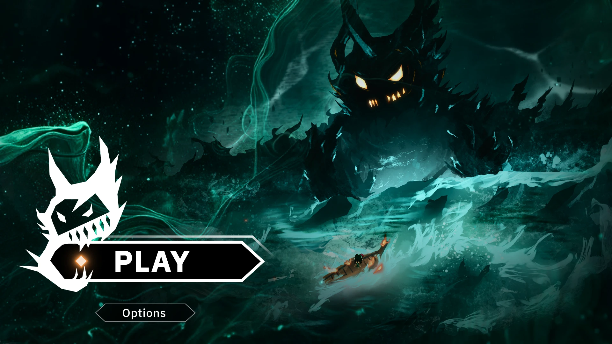
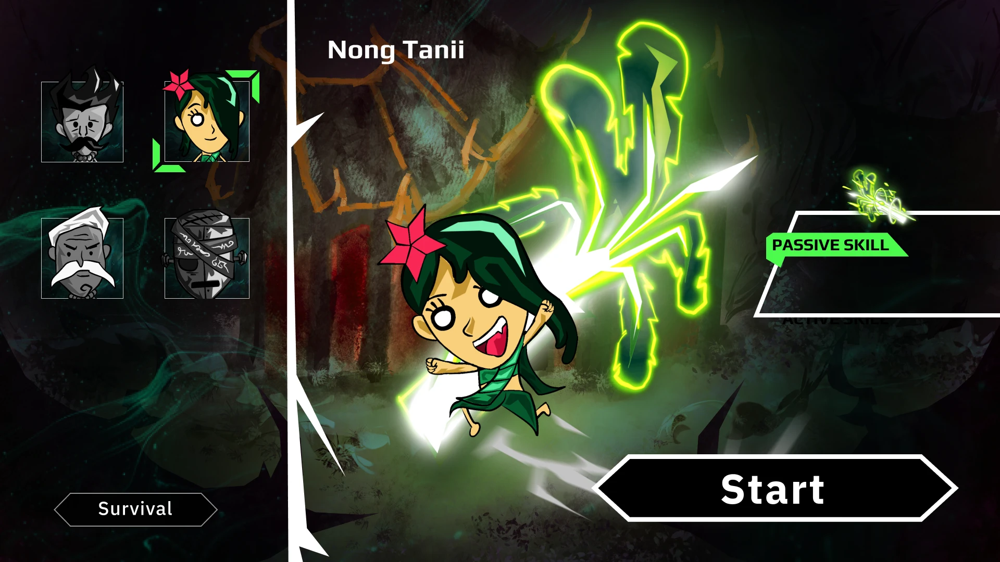
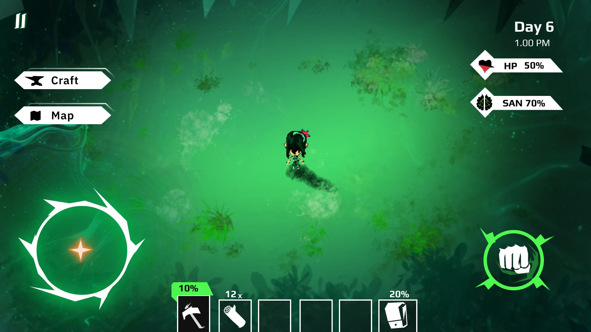
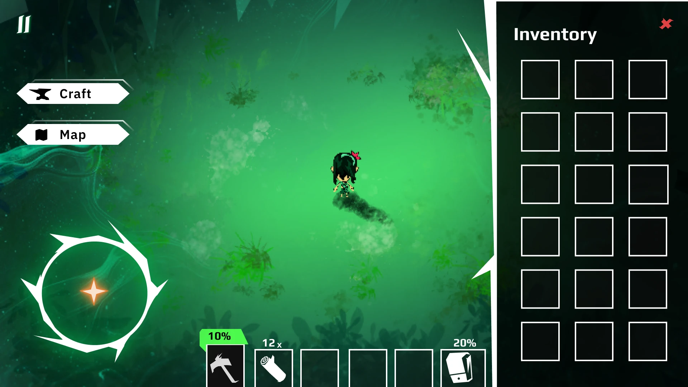
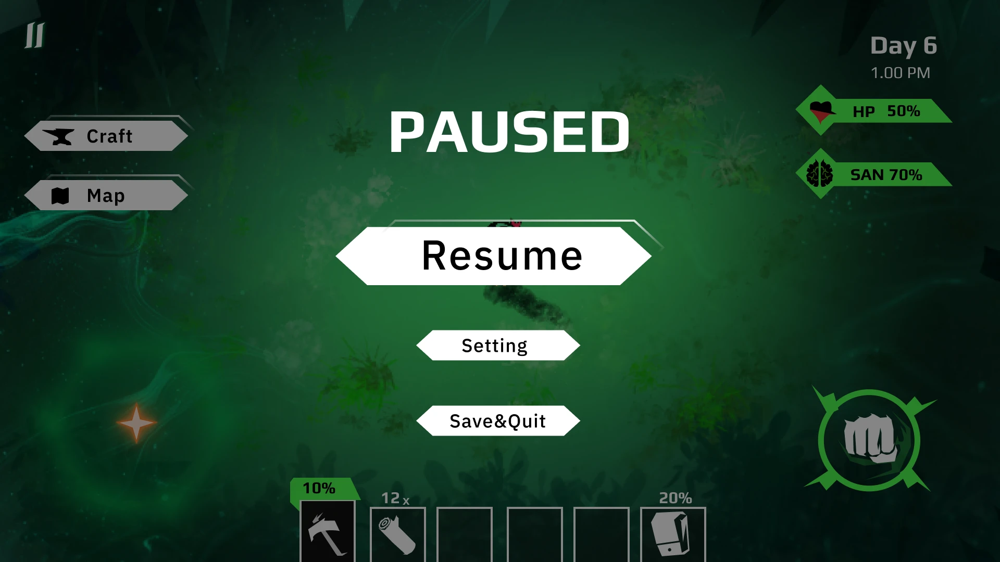

Title Screen
Load Save Screen

Character Select Screen
Game Play Screen
Inventory Screen
Pause Screen
Game-Over Screen

การออกแบบUI/UXของเกม: Missturerที่ผมวางแผนโดยเน้นไปที่ความสะดวกในการใช้งาน UI การใช้สีที่มีContrastชัดเจน
Project นี้ผมได้ออกแบบทุกอย่าง Art Style,UI/UX , Graphic Design
ออกแบบUser Flow : เพื่อจำลองประสบการณ์ผู้เล่นในเกมว่าจะพบเจออะไรบ้าง เราจะออกแบบประสบการณ์เพื่อให้ผู้เล่นสามารถเข้าใจและเล่นเกมได้อย่างง่ายดาย
หลังจากออกแบบUser Flow แล้วจึงออกแบบ UI ให้เหมาะสมกับภาพและFlowที่เราวางแผนเพื่อสร้างประสบการณ์ที่ดี
คือการสร้างระบบที่ทำให้งานออกแบบมีทิศทางเดียวกันหรือเป็นแนวทางที่ใช้ในการออกแบบ UI ที่มีรูปแบบสอดคล้องกัน
ไอเดียในการออกแบบของผมคือ ความเรียบง่ายของ UI,Font สีที่มีContrastสูง เช่น สีขาว สีดำและสีเขียวเพื่อให้ผู้เล่นสามารถเข้าใจและเล่นเกมได้อย่างสนุก